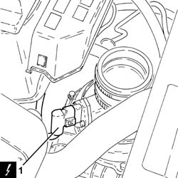
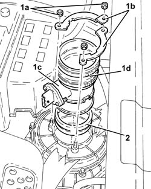

1056F09 HOT FILM AIR FLOW METER (flow meter) - R.R.
- Path
- Procedures > 10 ENGINE > 1056 PETROL INJECTION SYSTEM > 1056F DIRECT PETROL INJECTION SYSTEM > 1056F09 HOT FILM AIR FLOW METER (flow meter) - R.R.
- Kind
- repair procedure (removal / refitting; the operation number is the code)
- Applies to
- engines: 2.0 JTS, 2.0 JTS; all production periods
- Interactive page
- https://sloeber94.github.io/elrnDB-a156/en/#/3237730
Applies to: engines: 2.0 JTS, 2.0 JTS; all production periods
 Removing
Removing
 Refitting
RefittingEnsure that the ignition key is in the OFF position, then disconnect the negative battery terminal.
 | Name | Connector |
|---|---|---|
- | Battery |
Proceed with removal 1048A59 PIPE from flow meter to throttle casing hose - R.R. .
1. Disconnect the electrical connection from the air flow meter.
| Name | Connector |
|---|---|---|
1 | Air flow meter |

Applies to: engines: 2.0 JTS, 2.0 JTS; all production periods
1. Undo the nuts (1a), remove the plates (1b) and air flow meter (1c) complete with sleeve (1d).
2. Remove the plastic collar.

Applies to: engines: 2.0 JTS, 2.0 JTS; all production periods
Refitting
RemovingRefit the plastic collar in its seating.
Refit the air flow meter in its seating complete with sleeve and secure it with the plates and nuts.
Connect the electrical connection to the air flow meter.
Proceed with refitting 1048A59 PIPE from flow meter to throttle casing hose - R.R. .
Connect the negative (-) battery terminal.